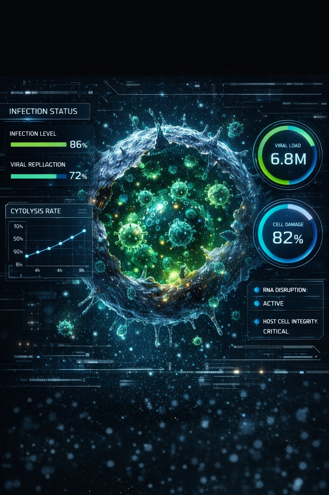

Genome Monitoring
Virus Structural Model

Infected Cell Analysis

Virus Architecture
Vital Sign Monitor
72 BPM
Bio Scanner
Research System Log
International Accreditation
ISO 27001 Data SecurityWHO BioSafety Level: BSL-4
Global Genome Project: GGP-2049
Research Protocol: TV-A114-RX
Sample Status: VERIFIED
International Bio Research Authority